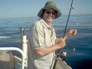

Tarpeena Tales 9
There is an old Pommy song, “I do like to be beside the sea side, Oh I do like to be beside the sea etc.,” well I am an old Pom but generally speaking I don’t like to be anywhere near the sea down in the South East of South Australia
This is because the South East has a treacherous coastline and a climate to go with it. Strong winds and a swell
that originates in the roaring forties means that nearly every time we have ventured to the beach we have turn tailed and returned to the warmth of
Tarpeena rather than try our luck fishing or indeed swimming and BBQs are only for the fool hardy.
But some days are exceptional- the wind blows warmly from the shore, the swell subsides and the sea beckons invitingly.
And so it was when Don and Liz invited us to go with them and visit Dave Austin and his wife Cheryl at their place by the sea.
The Austin’s have a Beach house at Nora Creina, a private settlement somewhere between Beachport and Robe and the council intends to keep it that way, private
that is, as they have designed the road to be suitable mainly for 4WD’s and trucks. But Don HAS a 4wd and the trip is worth the journeying as the place is a little
gem nestled behind some coastal dunes. Especially on the day we made the trip. We went armed with food for lunch and sunblock for limbs, chairs for bums, hats for heads and even beer for Malcolm and others. So were well equipped but not prepared for fishing. However it seems Dave is prepared for uninvited guests dropping in on nice days and has a shed full of rods, a freezer full of bait and a boat that will take passengers across the sea if the day is fine. And this day was fine.
We went armed with food for lunch and sunblock for limbs, chairs for bums, hats for heads and even beer for Malcolm and others. So were well equipped but not prepared for fishing. However it seems Dave is prepared for uninvited guests dropping in on nice days and has a shed full of rods, a freezer full of bait and a boat that will take passengers across the sea if the day is fine. And this day was fine.
We got there just about lunch time, well it was for us but Dave announced that it was breakfast for him and
son Troy as they had just got back from drop netting for crayfish. Cheryl is also prepared for
unannounced visitors and prepared breakfast for Dave and lunch for us, combining what we had brought with what she already had
with aplomb and an expert hand so that all were fed and watered.
I had been up to the top of the dune and seen how lovely the bay was and after lunch Nuran and I and Liz went for a walk along the
beach. This was further than we thought but the day was mild and the sea was warm for paddling. I had contemplated going for a
swim but the thought came to me that the vision of my pale unmuscular torso breast- stroking its way through the briny would spoil
many a photo of such a perfect beach so in the interest of aesthetics I changed my mind. Wisely in Nurans view as there has been a
series of shark attacks on swimmers in Australia lately and, although it would be hard for a shark to mistake me for a meal unless it
likes bone a lot, she didn’t want to have to bury a shark’s stomach instead of my remains.
But the swim to the island did look tempting.
Still resisting temptation we returned to the shack ( aussie for beach house) to find that Dave, Troy and Don had armed themselves
with rods and bait and were waiting to see if I wanted to go fishing. The target were Sweep, a fish that haunts the swells and
breakers of the reefs and which you could only fish for when the sea was calm- which it was on the day. Having had the aborted
Trout fishing episode seeTarpeena Tales 8, I was very keen as there wasn’t a mountain in sight and the seas weren’t even mountainous, so off to sea we went.
Never one to waste an opportunity of drop netting for crayfish Dave and Troy dropped nets on the way out and once on the reef we dropped our baited lines in a “boil”.
A boil is an underwater surge caused by a sudden rise in the reef that comes to the surface and makes it look like boiling water. Cunning name that.
Sweep like boils and so do Rock Cod. Rock Cod are the crap that takes your bait so that catching Sweep becomes difficult. We
caught heaps of Rock Cod and after thinning them out started to catch Sweep. We caught enough for a feed and then checked the
drop nets. Caught some crayfish and then went to somewhere else and caught some more Rock Cod and then some Sweep. 

caught a monster but didn’t land it as it snapped his line so what it was we don’t know but it may have been a shark. I was glad then that I hadn’t gone swimming.
Anyway with nearly enough crays to make the limit and more than enough Sweep to make a feed we
headed back to the shack. The women were suitably impressed with the catch and some beers were
drunk to celebrate. It was then I remembered that I hadn’t put sunblock on my nose and now looked like
Bobo the clown. Well I remembered when Liz said I looked like Bobo. But why worry after such a
perfect day. Cleaning the fish was not hard and Dave cooked the crays and we stayed for tea, which we
hadn’t planned. But Cheryl is used to uninvited guests who stay for tea and a barbeque was held. So Dave had to cook that! Cheryl
is very organised.Dave is also a good cook.
It was a good day and although we didn’t catch one ourselves a Cray was given to us as a memento as well as all the Sweep, so a
very good day!
I did like to be beside the seaside! Now click on this and see some more.